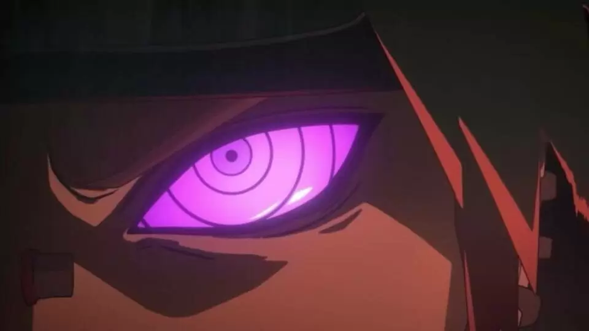

La reflexión de Masashi Kishimoto sobre el arco más difícil de Naruto: 'Fue la peor época de mi vida'

"La parte más difícil para mí fue probablemente el arco de Pain. La lógica de Pain puede interpretarse como justa, pero al mismo tiempo también la de Naruto. Dado que ambos personajes podían verse como correctos, realmente me angustié intentando resolver adecuadamente el desenlace. Esa fue una época verdaderamente difícil para mí".
Los arcos más difíciles de Naruto
Masashi Kishimoto ha compartido cuáles fueron los arcos más difíciles de crear debido a bloqueos creativos y morales.
- El diálogo entre Naruto y Nagato (Capítulos 444 – 449)
- La Cuarta Gran Guerra Ninja (Capítulos 515 – 699)
- Los Exámenes Chunin (Capítulos 34 – 115)
Más difíciles de crear debido a esfuerzo técnico (dibujo).
- La destrucción de Konoha con el Shinra Tensei (Capítulo 429)
- Los capítulos centrados en Sasuke Uchiha.